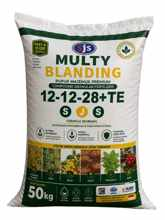

Produk Unggulan
PRODUK UNGGULAN

SJS Multy Blanding
Pupuk Majemuk untuk pemupukan berimbang

Agrophos 36
Pupuk Phospat Alam

Sawit Mas
Pupuk untuk Sawit

SP-36
Pupuk Phospat Tinggi

PHOS-K SJS
Booster Bunga & Buah
Produsen Pupuk Berkualitas
Solusi pemupukan untuk berbagai jenis tanaman, dari lahan pangan hingga perkebunan.
Pesan via WhatsApp
Pupuk Majemuk untuk pemupukan berimbang
Pupuk Phospat Alam
Pupuk untuk Sawit
Pupuk Phospat Tinggi
Booster Bunga & Buah
Pupuk majemuk dengan formula 12-12-28+TE yang dirancang untuk mendukung kebutuhan nutrisi tanaman secara lebih praktis dan seimbang. Cocok digunakan pada berbagai komoditas untuk membantu pertumbuhan tanaman, perkembangan akar, serta mendukung pembentukan dan pengisian hasil panen.
Dengan karakter Fast & Slow Release, SJS Multy Blanding membantu menyediakan nutrisi secara bertahap sehingga pemupukan menjadi lebih efisien dan sesuai kebutuhan tanaman.